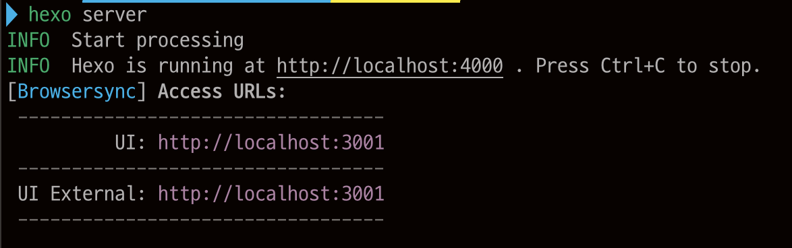

Making Hexo Blog #2
Apr 29, 2020
Hexo Blog 만들기 # 2
Hexo 블로그에 테마 적용하기
먼저 hexo 를 설치하면 default theme 가 설치 되어 있습니다.
그러나 이번 포스트는 테마를 바꾸는 방법에 대해 설명하겠습니다.
먼저 고르려고 하는 테마를 고릅니다.
저 같은 경우에는 apollo 테마를 선택하였습니다.각 테마마다 요구하는 npm package 가 있습니다. 저의 경우는 다음과 같습니다.
npm install --save hexo-renderer-jade hexo-generator-feed hexo-generator-sitemap hexo-browsersync hexo-generator-archive그 다음 테마가 담긴 폴더를 clone 합니다.
git clone https://github.com/pinggod/hexo-theme-apollo.git themes/apolloHexo 를 local 에서 보고 싶다면
hexo server이제 local host 에서 볼 수 있습니다.
(Mac zsh)
잘 따라왔다면 local 에서 error 가 날 가능성은 딱히 없을 것이라 생각됩니다.
만약 error가 생긴다면 clone 한 theme 폴더에서 문제가 생겼을 가능성이 높습니다.
이 때, 테마 폴더로 가서 npm install 을 해보세요.
여기까지 로컬 환경에서의 Hexo setting 입니다.
다음은 git 과 github pages, Travis CI 를 이용한 배포 포스팅을 진행하겠습니다.